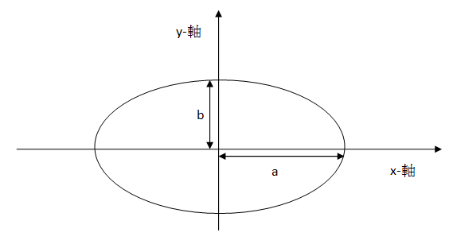

<!DOCTYPE html><html></html><head><meta charset="UTF-8"><meta content="text/html; charset=UTF-8" http-equiv="content-type"><link href="style.css" rel="stylesheet" type="text/css"><link rel="stylesheet" href="https://maxcdn.bootstrapcdn.com/bootstrap/3.3.7/css/bootstrap.min.css"><script src="jquery/dist/jquery.min.js"></script><script type="text/javascript" src="./selectchapter.js"></script><script src="https://maxcdn.bootstrapcdn.com/bootstrap/3.3.7/js/bootstrap.min.js"></script><title>第五章 基礎資料型別</title></head><body><nav class="navbar navbar-default" role="navigation"><div class="container-fluid"><div class="navbar-header"><a class="navbar-brand" href="#">板中資訊社</a></div><div><ul class="nav navbar-nav"><li class="active"><a href="#">C++</a></li><li class="dropdown"><a class="dropdown-toggle" href="#" data-toggle="dropdown">語法<b class="caret"></b></a><ul class="dropdown-menu"><li><a href="ch01.html">第一章 立刻動手</a></li><li><a href="ch02.html">第二章 變數與指定運算子「=」</a></li><li><a href="ch03.html">第三章 比較運算子與 if 陳述式</a></li><li><a href="ch04.html">第四章 迴圈</a></li><li><a href="ch05.html">第五章 基礎資料型別</a></li><li><a href="ch06.html">第六章 字元與字串</a></li><li><a href="ch07.html">第七章 陣列</a></li><li><a href="ch08.html">第八章 自定義函數與資料型別</a></li><li><a href="ch09.html">第九章 排序</a></li></ul></li><li><a href="2017summer.html">2017暑假課表</a></li></ul></div></div></nav><h1>第五章 基礎資料型別</h1><button id="button1">整數型態</button><button id="button2">浮點數資料型別</button><button id="button3">cmath 數學函數</button><div class="para" id="para1" style="display:none;"><h2>5.1 整數型態</h2><h3>5.1.1 無號整數</h3><li><a href="https://zerojudge.tw/ShowProblem?problemid=d984">d984. 棄保效應</a></li><p>題目大意：給你三個整數代表 A, B, C 三個候選人的得票數 a, b,
c，如果得票數最少的候選人的票數全部給得票數第二高的候選人的話，最後會是誰當選？</p><p></p><p>候選人 A 要贏得選舉的條件如下：</p><p>a > b + c，這樣不管有沒有棄保效應，A 一定會當選。(a>b+c)</p><p></p><p>如果 c > a > b，那麼就可以運作「棄 B 保 A」，此時若 a + b > c，A 就會當選。(c>a
&& a>b && a+b>c)</p><p></p><p>如果 b > a > c，那麼就可以運作「棄 C 保 A」，此時若 a + c > b，A 就會當選。(b>a
&& a>c && a+c>b)</p><p></p><p>再次提醒，數學上的 c > a > b 寫成程式時要寫成 c > a && a > b 而不是 c
> a > b。</p><p>把以上三個條件用「或」運算子連接起來，就是 A 當選的條件了：</p><p>a>b+c || c>a && a>b && a+b>c || b>a
&& a>c && a+c>b</p><p></p><p>(只要其中之一成立A即可當選)</p><p></p><p>B 當選的條件也可以類推，寫成程式如下：</p><script src="https://gist.github.com/allem40306/cce2e54df7a528532ba68e2174e8e112.js?file=ch05-01.cpp"></script><p>可是當你把這個程式上傳時，你卻得了個「WA (line:49)」。基本上這個程式的邏輯上並沒有錯，問題出在 int 的範圍上。</p><p>雖然題目說 a, b, c 的值會 ≤ 2147483647，基本上它們並沒有超過 int
的範圍，可是當其中的兩數相加時，其結果就有可能超出範圍了。這一題的第 49 筆測試資料是</p><p>2147483647 2147483646 2</p><p>當我們在判斷 a > b + c 時，其中的 b + c 為 2147483646 + 2，所得的結果為
2147483648，因為已經超出 int 的範圍了，所以它變成了 -2147483648，導致 a > b + c
本來應該是「false」的，現在卻變成了「true」了，本來應該是 B 當選的，結果就輸出 A 了。</p><p>要解決這個問題，我們需要一個可以處理比 2147483647 更大的值的資料型態。</p><p>2147483647 = 231 - 1，轉成二進位是 1111111111111111111111111111111，也就是 31 個
1。事實上 int 資料型態在電腦裡佔用 4 個位元組 (Bytes)，也就是 32 個位元 (bits)，理論上它的最大值應該是 32 個
1，也就是 232 - 1，但是系統留了最左邊的那的位元來表示正負號，這個位元稱為「符號位元」(sign bit)，0 表示這個數字為正，1
則表示這個數字為負。</p><p>但是如果你的程式所處理的資料沒有負數，這個符號位元就不需要了，我們可以把全部的 32 個位元全部用來表示數字的大小，如此最大值就變成了 232
- 1了。要宣告這樣的變數，只要在 int 之前加上 unsigned (無號) 這個關鍵字就可以了。</p><p>也就是說，上面的程式只要把</p><script src="https://gist.github.com/allem40306/cce2e54df7a528532ba68e2174e8e112.js?file=ch05-01.cpp"></script>這一行改成<p><script src="https://gist.github.com/allem40306/cce2e54df7a528532ba68e2174e8e112.js?file=ch05-03.cpp"></script></p><p>就可以 AC 了。</p><li><a href="https://zerojudge.tw/ShowProblem?problemid=a007">a007. 判斷質數</a><p>題目大意：給你一個 ≧ 2 的整數 x，判斷 x 是不是質數。</p><p>質數的定義是：除了 1 和本身以外，沒有任何其他因數的整數。要判斷 x 是否質數，我們可以先用 2
去除，看看是否可以整除，如果不能整除的話，再用 3 去除除看，如果還不能整除，再用 4
去除除看……，以此類推，一直找到第一個整數為止。用這個方式可以找到 ≧ 2 的最小因數，如果這個因數就 = x，那麼 x 就是質數了。</p><script src="https://gist.github.com/allem40306/cce2e54df7a528532ba68e2174e8e112.js?file=ch05-04.cpp"></script><p>這個程式雖然可以判斷 x 是否為質數，但是上傳以後卻得了個「TLE (1s)」，意思是你的程式沒有辦法在所限定的 1
秒內跑出正確解答來。為什麼呢？</p><p>題目中說明 x 的最大值是 2147483647，我們就用這個值來輸入，在筆者的電腦上執行了大約 8.5
秒才輸出它是「質數」，但是題目的時間限制只有 1 秒。</p><p>由於 2147483647 是個質數，根據上面的程式，d 從 2 開始試著去除 x，迴圈要一直執行到 d = 2147483647 時才能整除
x，這時已經執行了 2147483646 次的除法，時間也早就超過了題目的限制。</p><p>其實，一個整數的因數是成對存在的。如果 d 是 x 的因數，那麼 x 也必有另一個因數為 x / d。而 d, x / d
這兩個因數一定有一個會 ≤。因此我們如果在 ≤  的整數中如果找不到 x 的因數，那麼 x 就是質數。</p><p>是我們到目前為止還沒有學到如何去開根號，那這題要如何處理？開根號的函數會稍後的章節中提到，到時候這個題目也會再拿出來討論，但是這題即使沒有使用
開根號的函數也仍然可以完成。</p><p>雖然我們目前沒有辦法去判斷 d ≤，但是如果我們把這個關係式的兩邊都平方，不就成了 d2 ≤ x。根據這個關係式，我們把迴圈部份改寫如下：</p><script src="https://gist.github.com/allem40306/cce2e54df7a528532ba68e2174e8e112.js?file=ch05-05.cpp"></script><p>如此一來，跳出迴圈的條件有兩個：d 可以整除 x，或 d > ，只要其中一個情況出現了，迴圈便會中止。以 x = 2147483647
為例，當 d = 46341 時，d*d 就會 > x，迴圈也就會中止。由於迴圈最多只執行 4 萬多次，而不是原先的 21
億次，程式會變得很快！</p><p>但是接下來要判斷 x 是否是質數時，就不能再用 (d == x) 了，因為跳出迴圈時，d = 46341，而不是
2147483647。這時候可以改用 (d*d > x) 來作為判斷質數的條件。整個程式修改後如下：</p><script src="https://gist.github.com/allem40306/cce2e54df7a528532ba68e2174e8e112.js?file=ch05-06.cpp"></script><p>當我們執行這個程式並輸入 2147483647 時，發現程式不但沒有變快，甚至答案也變成了「非質數」。</p><p>問題就發生在當所輸入的 x 是 int 的最大值時，只要 > x 的值就會溢位。觀察下表，當 d = 46340 時 d*d 仍小於 x
的 2147483647；可是當 d = 46341 時，d*d 就爆掉了而變成一個負數，而跳出迴圈的條件是 d*d >
x，因此這個條件永遠不會成立，迴圈也不會在該中止的時候中止。</p><table><tr><th rowspan="2">d</th>      <th colspan="2">d*d</th>      <th></th></tr>  <tr><th>理論值</th>      <th>實際值</th>      <th></th></tr>  <tr><th>46340</th>      <th>2147951716</th>      <th>2147951716</th>      <th>d*d 仍 < x</th></tr>  <tr><th>46341</th>      <th>2147488281</th>      <th>-2147479015</th>      <th>爆掉了！</th></tr></table><p>解決的辦法是，我們需要一個可以容納 2147488281 這個數字的資料型態。int 不行，但是 unsigned int
(無號整數)可以。所以你只要把上列程式的 int 加上 unsigned 就可以 AC 了。</p><p>另外，我們可以利用 for 迴圈把 d 的變化範圍集中在一行，讓程式較具有可讀性：</p><script src="https://gist.github.com/allem40306/cce2e54df7a528532ba68e2174e8e112.js?file=ch05-07.cpp"></script><p>整數和無號整數在作運算時，如果沒有負數還好，一但有負數就會出現問題，例如以下範例：</p><script src="https://gist.github.com/allem40306/cce2e54df7a528532ba68e2174e8e112.js?file=ch05-08.cpp"></script><p>正確結果應該是-132</p><p>但程式跑出的結果然是4294967164</p><p>這是由於進行運算時(unsigned int)*(signed int)結果會是(usingned
int)，於是形成一個不容易察覺的singned、unsigned比較。由於程式在字面上看起來吻合撰寫者的邏輯，所以這個錯誤會非常難抓。如果將
b 和 c 強制轉換成signed的話就不會有這種問題了!</p><p>另外，有關於整數和無號整數的差別，有另一段程式碼可以解釋:</p><p><script src="https://gist.github.com/allem40306/cce2e54df7a528532ba68e2174e8e112.js?file=ch05-09.cpp"></script></p><p>程式會告訴你-5比較大，因為當 signed 和 unsigned 一同做運算時，signed 會自動轉型成 unsigned，在 32
bit 機器上 -5 會變成 4294967291。</p><p>所以如果你不太會用unsigned int 時，或是你怕會搞錯，請你就用long long吧!以下會介紹</p><p></p><h3>5.1.2 Long Long 整數</h3></li><li><a href="https://zerojudge.tw/ShowProblem?problemid=b077">b077. C. 不公平的人，是誰？</a></li><p>題目大意：輸入兩個正整數 M, N，如果 M > N 就輸出 "Fair"，否則輸出 "Unfair"。</p><p>這題看起來相當簡單，但是如果你仔細看看 M, N 的範圍，最大到 4611686018427387904，也就是 262。這個值遠大於 int
的上限 2147483647，也就是 231 - 1。就算是上一節中所教的 unsigned int 的 232 -1 也還是不夠大。</p><p>其實在 C++ 裡的整數型態 int 除了可以用 signed, unsigned 來指定要不要正負號以外，還可以用 short, long,
及 long long 來指定變數的大小。因此，整個整數型態的名稱分成三個部分，我們稱之為「符號部」「大小部」及「型態部」，詳如下表：</p><table><tr><td></td><td>符號部</td><td>大小部(位元組)</td><td>型態部</td></tr>	<tr><td>選項</td><td>signed (有號)<br>unsigned (無號)</td><td>short (2)<br>long (4)<br>long long (8)</td><td>int</td></tr></table><p>由於符號部有兩種選擇、大小部有三種選擇，組合起來之後，C++ 的 int 一共有六種變化如下：</p><p>signed short int<br>    signed long int<br>    signed long long int<br>    unsigned short int<br>    unsigned long int<br>    unsigned long long int</p><p>上面的 6 個型態名稱是完整的寫法，看起來有點冗長。於是 C++ 也把比較常用的選項設為可以省略的內定值。</p><table><tr><td></td><td>符號部</td><td>大小部(位元組)</td><td>型態部</td></tr>	<tr><td>內定值</td><td>signed</td><td>long</td><td>int</td></tr></table><p>「符號部」的內定值為 signed，因此如果符號部從缺時，系統便會視為有號整數。</p><p>「大小部」的內定值則是依硬體、作業系統、及編譯器而有所不同。筆者很久以前在 DOS 上用 Borland 公司的 Turbo C++
寫程式時，這個部份如果省略的話，系統會視為 short，所宣告出來的變數只有 2 個位元組。更慘的是，在那個環境中，系統還不提供 long
long 這個資料型態呢，遇到像 b077 這樣的題目就麻煩大了！</p><p>現在因為一般的電腦硬體、作業系統至少都是 32 位元，處理 32 位元的整數的效率和處理 16
位元整數的效率是一樣的，所以大多數的編譯器，包括 VC++ 2010 在內，如果你不指定大小的話，系統則內定為 long (4
個位元組)，也就是 32 個位元。</p><p>至於「型態部」的
int，是當然的內定值，所有的情況它都可以省略，唯一的條件是其他兩個部份不可以同時都省略。(這是廢話，三個部份都省略不就什麼都沒有了！)</p><p></p><p>根據以上說明，其實我們在第一到四章中所習慣的 int 型態，完整的三部份寫法是「signed long
int」，只是我們把「signed」及「long」省略掉罷了。事實上，它一共有「int」、「long」、「signed」、「long
int」、「signed int」、「signed long」、「signed long int」等 7 種寫法，但它們所代表的意義完全相同！</p><p>綜上所述，我們把這六種整數型態的特質整理如下表：</p><table><tr><th>完整名稱</th><th>最短名稱</th><th>位元</th><th>最小值</th><th>最大值</th></tr>	<tr><td>signed short int</td><td>short</td><td>16</td><td>-32768</td><td>32767</td></tr>	<tr><td>unsigned short int</td><td>unsigned short</td><td>16</td><td>0</td><td>65535</td></tr>	<tr><td>signed long int</td><td>int</td><td>32</td><td>-2147483648</td><td>2147483647</td></tr>	<tr><td>unsigned long int</td><td>unsigned</td><td>32</td><td>0</td><td>4294967295</td></tr>	<tr><td>signed long long int</td><td>long long</td><td>64</td><td>-2^63</td><td>2^63-1</td></tr>	<tr><td>unsigned long long int</td><td>unsigned long</td><td>64</td><td>0</td><td>2^64-1</td></tr></table><p><a href="http://pcshic.github.io/start/appendix.html#start.appendixA">「附錄 A 基礎資料型別」</a>中列出了 C++ 語言所定義的型別，你可以在其中找到以上的六種資料型態。</p><p>(附註:263 - 1=9223372036854775807,而264 - 1=18446744073709551615)</p><p>對本題來說，long long 這個資料型別最大值為 263 - 1，足以處理這個題目的資料最大值 262。你可以把 M, N
宣告如下，再根據題意寫出程式就可以 AC 了。</p><script src="https://gist.github.com/allem40306/cce2e54df7a528532ba68e2174e8e112.js?file=ch05-10.cpp"></script><li><a href="https://zerojudge.tw/ShowProblem?problemid=d127">d127. 二、牧场面积</a></li><p>題目大意：給你矩形的周長，求最大面積。所給的周長一定為偶數，所圍的邊長必需是整數。</p><p>如果題目所給的周長保證是 4 的倍數，那麼這題就比較簡單了。但是題目只保證所給的周長是偶數，如果不是 4 的倍數的話，那麼這矩形的長就會比寬大
1。這個就有點小麻煩了，不過如果你夠聰明的話，也是可以用一個式子求出牧場面積的。</p><p>這個題目其實不難，之所以放在這一章才教，是因為它所給的周長會大於 4294967295，必需用 long long 才能 AC。</p><li><a href="https://zerojudge.tw/ShowProblem?problemid=c005">c005. 環保獎金 </a></li><p>這個題目是從 UVa 的題庫出來的。它原來的總金總和是不會超出 int 的範圍的，但是 ZeroJudge 上的測試資料卻會使獎金總和超出
int 的上限，所以用來計算總和的那個變數要改用 long long。</p></div><div class="para" id="para2" style="display:none;"><h2>5.2 浮點數資料型別</h2><p>浮點數就是帶有小數的數字。</p><li><a href="https://zerojudge.tw/ShowProblem?problemid=d051">d051. 糟糕，我發燒了！</a></li><p>題目大意：輸入華氏溫度 f，換算成攝氏溫度後輸出。攝氏 = ( 華氏 - 32 ) * 5 / 9 ，直接按題意寫成程式如下：</p><script src="https://gist.github.com/allem40306/cce2e54df7a528532ba68e2174e8e112.js?file=ch05-11.cpp"></script><p>但是，" / "除完之後得到的是商，是一個整數，不是我們想要的答案。</p><p>那要讓它除出來的結果有小數要怎麼辦呢?則在這個運算式裡必須帶有浮點數。</p><p>所以我們可以把"5"改成 "5.0"或是直接打"5."就可以了。</p><script src="https://gist.github.com/allem40306/cce2e54df7a528532ba68e2174e8e112.js?file=ch05-12.cpp"></script><p>寫成這樣就差不多完成了，可是題目還有一個要求，只要取到小數以下第3位。</p><p>這時就要在cout你的答案之前，打上 <<  fixed << setprecision(3)
這樣他就會輸出至小數點後第三位。</p><p>要用  fixed  setprecision() 之前，必須先 #include<iomanip>。</p><p>這樣這題就完成了：</p><script src="https://gist.github.com/allem40306/cce2e54df7a528532ba68e2174e8e112.js?file=ch05-13.cpp"></script><li><a href="https://zerojudge.tw/ShowProblem?problemid=d055">d055. 11437 - Triangle Fun</a></li><p>之前學到的數字的資料型別，像 int 或 long long ，都是"整數"的資料型別，那帶小數點的數字呢?</p>帶有小數的資料型別(浮點數)只有兩種：<p></p><table><tr><th>名稱</th><th>位元</th><th>範圍</th></tr>	<tr><td>flout</td><td>16</td><td>3.4E +/- 38 (7digits) </td></tr>	<tr><td>double(long double)</td><td>32</td><td>1.7E +/- 308 (15 digits)</td></tr></table><p>其實，PQR = ABC / 7，至於 ABC 的面積可以利用題目下面的提示所提供的公式去求，這樣就可以得到答案。但是這裡有一個小小的陷阱：</p><p>C++ 內建的 abs() 函數只能用來求整數的絕對值，如果你用浮點數代進去，它會先把小數部份無條件捨去並轉成整數型態後再取絕對值。</p><p>但是在 <cmath> 這個標頭檔中，包含了三個 abs() 的重載：</p><p>(待補)</p><p>x 的絕對值：abs(x) </p><p>#include template/<cmath></p><p>(現在已改成#include<stdlib>)</p><p>(補充:如果學過副程式，你也可以自己寫，寫法如下:</p><script src="https://gist.github.com/allem40306/cce2e54df7a528532ba68e2174e8e112.js?file=ch05-14.cpp"></script><li><a href="http://contest.cc.ntu.edu.tw/npsc2008/2008jun_final.pdf">2008 NPSC 國中組決賽 F. 優惠方案Ⅱ</a></li></div><div class="para" id="para3" style="display:none;"><h2>5.3 cmath 數學函數</h2><h3>用c++進行開根號及平方</h3><p>再一些程式語言中(ex.Visual
Basic)，如果要求一些數的二次方或三次方，可以直接用上引號(ex.2^2=4)表示，但很可惜的是c++中並沒有這種功能，</p><p>這種時候，如果我們要對一個數二次方或三次方，除了使用n*n*n之外，還可以用cmath標頭檔裡的pow函數，格式如下:</p><p>22的5次方=22^5=pow(22,5)</p><p>22的0.5次方=22^0.5=pow(22,0.5)=sqrt(22)</p><li><a href="https://zerojudge.tw/ShowProblem?problemid=a006">a006. 一元二次方程式</a></li><script src="https://gist.github.com/allem40306/cce2e54df7a528532ba68e2174e8e112.js?file=ch05-15.cpp"></script><p>另外，如果我們要對一個數平方，可以使用sqrt(x)來解決，但要注意的是，x必須是浮點數，若x不是浮點數，則必須將x強制型別轉換才可，否則會出現
警告標示:「'sqrt' : 模稜兩可的呼叫多載函式」</p><script src="https://gist.github.com/allem40306/cce2e54df7a528532ba68e2174e8e112.js?file=ch05-16.cpp"></script><li><a href="https://zerojudge.tw/ShowProblem?problemid=b004">b004: 繩子上吃草的牛</a></li><script src="https://gist.github.com/allem40306/cce2e54df7a528532ba68e2174e8e112.js?file=ch05-17.cpp"></script><p>附註:橢圓形面積==PI*半長軸*半短軸==PI*a*b</p><p>(圖片來源:http://tw.knowledge.yahoo.com/question/question?qid=
1509062705725)</p><li><a href="https://zerojudge.tw/ShowProblem?problemid=a020">a020: 身分證檢驗</a></li><script src="https://gist.github.com/allem40306/cce2e54df7a528532ba68e2174e8e112.js?file=ch05-18.cpp"></script><li><a href="https://zerojudge.tw/ShowProblem?problemid=c007">c007: TeX Quotes</a></li><script src="https://gist.github.com/allem40306/cce2e54df7a528532ba68e2174e8e112.js?file=ch05-19.cpp"></script><li><a href="https://zerojudge.tw/ShowProblem?problemid=d658">d658. 11636 - Hello World!</a></li><li><a href="https://zerojudge.tw/ShowProblem?problemid=a024">a024. 最大公因數(GCD)</a></li><br><br><br></div></body>